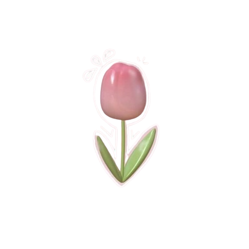

A happy payday
Something came in. Give it a place.
Income · Bank accountA little money journal. A lot to look forward to.
Make sense of the everyday. Save for the someday. TULLIP gives your money a gentle place to land, and your wishes a little room to grow.
One small step is still a step.

₹2,000 / ₹5,000
02 MOMENTS BECOME A MONEY STORY
Payday, a bus ride, coffee with a friend. Give each little moment a place in your journal, and watch the everyday make a little more sense.
0/5 little moments
Something came in. Give it a place.
Income · Bank accountThe small things are part of the story.
Expense · CashA little joy, neatly noted.
Expense · UPIA little set aside for someday.
Reserved in a wish jar · not an expenseIncome, spending and savings together.
Available after sample expenses & savings03 LITTLE SAVINGS BECOME PROGRESS
Every little amount you set aside brings a wish closer. Follow this sample savings path, one small step at a time.
₹0/ ₹5,000
Scroll-driven illustration only · no journal or bank money changes
03 / SOMETHING TO LOOK FORWARD TO
No wish is too ordinary. Make room for the things that matter to you.
A weekend away. A little saved today, a lovely memory tomorrow.
Sample wishes only. In the app, you name your own jars and choose your own targets.
Illustrative wishes · choose one to exploreYour wishes. Your pace. No one to catch.
YOUR LITTLE GROWING COMPANION
A pink tulip with a pocket full of possibilities. Lumi is TULLIP’s little reminder that lovely things can grow from small beginnings.
No perfect streaks. No race with anyone else. Just your wishes, your pace, and a friendly little nudge to keep growing.
05 / YOUR TURN
Try a sample expense here, then set a little money aside in the jar below. Everything stays in this example.
Try the wish jarJust an example. Nothing is saved, sent or connected to a bank.
₹2,000 / ₹5,000
02 / SOMEDAY STARTS SMALL
A trip, a new phone, a quiet rainy-day cushion. Set a goal, put a little money aside, and watch your jar fill with possibility.
Try it. Move ₹500 from your sample available money into this wish jar.
Setting money aside changes what’s available to spend. It isn’t an expense or a real bank transfer. You can release it when plans change.
06 / YOUR LITTLE MONEY JOURNAL
Thoughtful tools, all in one quiet corner.
Built for recording life, one little entry at a time.
Keep income, expenses, categories, payment methods and receipt notes together. Search your journal when you need to find that one little detail.
A compact calendar brings your entries into view. Small markers show activity; choose a day to revisit its records.
Review monthly income and spending. Export PDF or CSV statements, savings history and a JSON backup when you choose.
Choose your nickname, currency label, date format and week start. Replay the introduction, reduce motion, or take a skippable walkthrough.
What should we call you?Dreamer ♡
A little less movement
A helping handReplay introduction ↗
Illustrative preferences · not a form05 / YOUR OWN LITTLE SPACE
Some things are personal. Your money is one of them. TULLIP’s journal works locally on your device, with no account to create and no bank to connect.
Your own six-digit TULLIP PIN.
Design illustration · installed Android app onlyThe optional TULLIP PIN is separate from your phone’s screen lock. It guards casual access when you leave or reopen the app. There is no account-based PIN recovery.
No automatic uploads. Share an export only when you choose. JSON backups hold records and receipt metadata; Android receipt image files need a separate private copy.
The journal database is not encrypted. Keep your device secure and backups private. Uninstalling or clearing app data can remove your local records.
A FEW LITTLE ANSWERS
A gentle app should be easy to understand, too.
No account is needed. Everyday journal features work offline on your device. You only need an internet connection to visit this website or download a build.
No. You record accounts, payment methods, income and expenses yourself. Wish jars set money aside within your journal; they do not move real money or make bank transfers.
Yes. Release part or all of a jar’s saved amount back to an account. Your history stays available, and releasing money is not recorded as new income.
No. The new app lock uses a six-digit PIN you create for TULLIP. If you already enabled the older device-based lock, one verification of that existing protection is required to switch safely. Remember your TULLIP PIN: there is no reset bypass or recovery account.
Use Settings to export a JSON backup and keep it somewhere private. Android receipt image files are separate from their JSON metadata and need their own private copy. Back up before updating, uninstalling or changing devices.
Android testing builds will be shared through the project’s GitHub Releases page. No APK release is currently published. This website is a private preview; it does not install the app. See the download section for the current status.
You explored 0 little steps with TULLIP.
A LITTLE START. A LOVELY POSSIBILITY.
Your everyday money, your someday plans.
All in one little corner.
Download status: no APK release published yet.
Android 7.0+ is the declared minimum. Testing builds are debug-signed; device coverage is limited. Back up your journal before updating.
WHEN A TESTING APK IS AVAILABLE
A signature error is a reason to stop and check. Keep your installed journal; don’t uninstall your only copy of its records.